冷室壓鑄機
機體結構
- C型架與前機壁為一體成型，確保射出中心的一致性
- 特殊設計的曲手機構，機板厚度加厚，除了大幅增加鎖模時之剛性與穩定性，而且確保機壁面的平行精度。
- 機壁加厚，提升鎖模穩定性及剛性，將變形量降至最低。
- 超大尺寸之大柱經應力消除，強度高、使用壽命長。
標配設備

液壓系統
總壓控制採用無段式比例閥，具高效率且使用壽命長。使用大同馬達及日本TOKIMEC的油泵，穩定性及耐用度受到普遍的肯定。
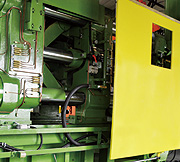
安全門
正反兩側安全門包覆，當安全門打開時，本機所有動作立刻停止，確保人員的安全及機器正常運行，減少環境對機器汙染，進而降低機器故障率。
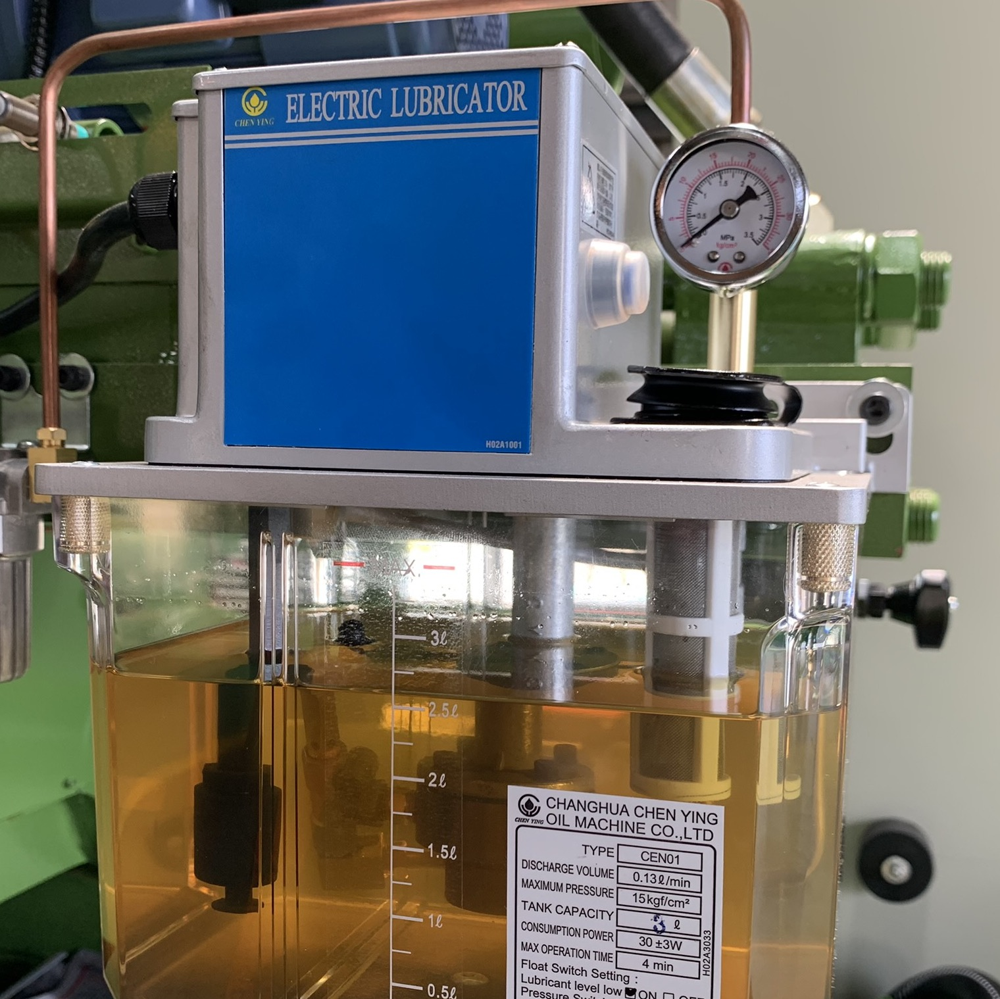
自動注油器
機器各部位曲手之活動點皆施以滑道油68潤滑，注油壓力20 kg/cm2，無潤滑不足之虞。
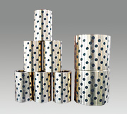
自潤型銅套
全系列機種之曲手使用自潤型銅套，可確保長久精度，減少注油頻率，並增加曲手在極壓情況下的耐受度。

活塞式蓄壓器
全系列機種採用活塞式蓄壓器，可積蓄壓力高達210 kg/cm2，並且直接作高壓輸出，可縮短增壓建壓時間，以提升鑄品密緻度。不受油壓油雜質影響，節省維修成本。
選配設備
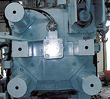
自動大柱抽取裝置
上側大柱可抽離前機壁，對於具有油壓中子之模具，提供裝卸時的方便性

雙射出中心
可依據柱建設計，射料位置選擇由機器中心或底部射出，射出缸體可按模具射料口位置移動調整
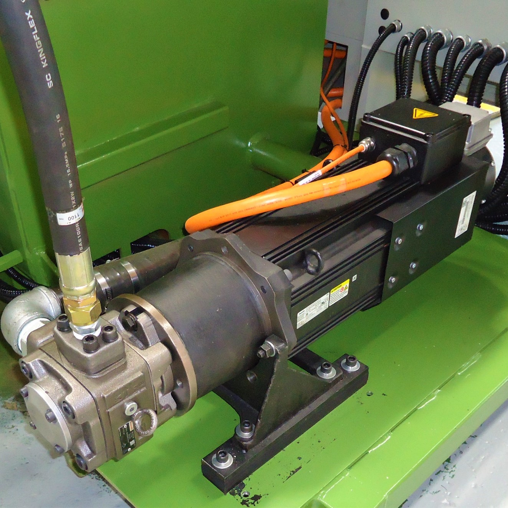
節能液壓
伺服液壓系統由德國Rexroth公司提供，機台液壓效率更高。機台怠速時，伺服電機暫停運轉，因而不耗能；運行時以超高轉速運行，能夠有效減少電能的使用達到35%
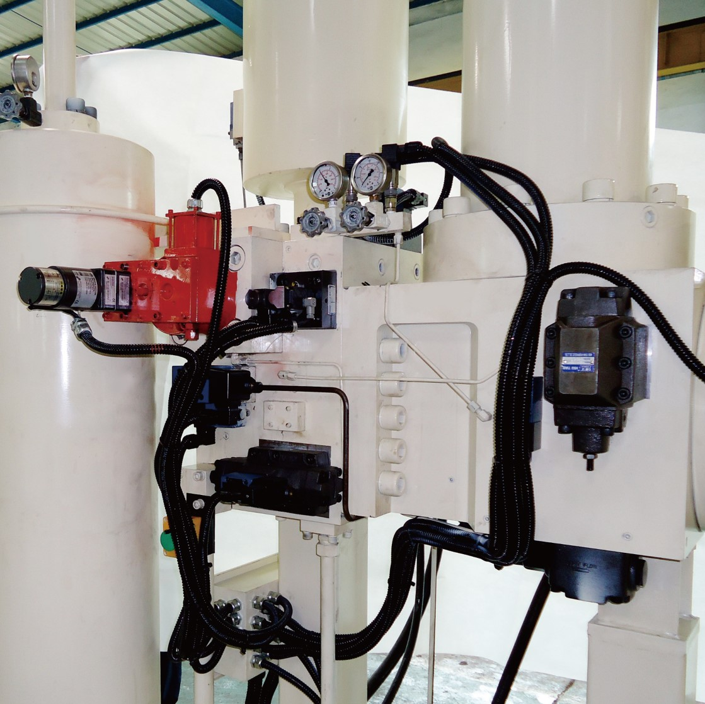
多段式射出控制
可提供8段位的射出速度數值化控制模式，可有效排除料管及模腔內空氣，特別適用於大型機器

電器系統
標配 Standard
- 可透過人機介面觀察快射、慢進、增壓壓力及速度
- Full Test 功能實機模擬壓鑄過程，清楚了解鋁水於成型過程的流動情況
- 多階段射出調整，可減少料管內捲氣；提高壓鑄件品質
- 比例閥的應用，可有效提升操作方便性，及降低電能的消耗達15%以上
選配 Optional
- 射出模式有三種：緩啓單速射出、等加速射出、多階段射速，可因應不同鑄件需求
- Wi-Fi可即時傳送製程訊息，實現遠端監控功能
- 雙主機運行，控制與資料擷取同時進行
- 射出曲線、壓力、速度、位移量，可同時顯示於介面
- 生產履歷記錄功能，可便於追溯歷史參數
- 可接入熔爐之溫度或模溫
三種射出模式可供選擇：緩啟單速、多段速、等加速
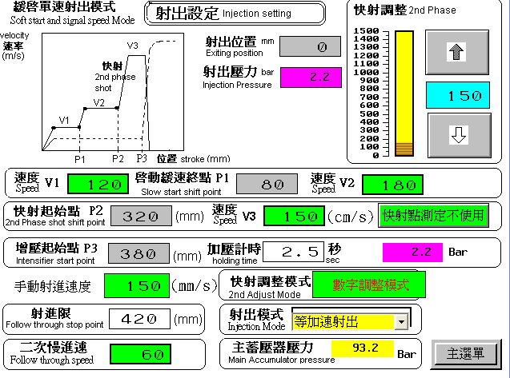
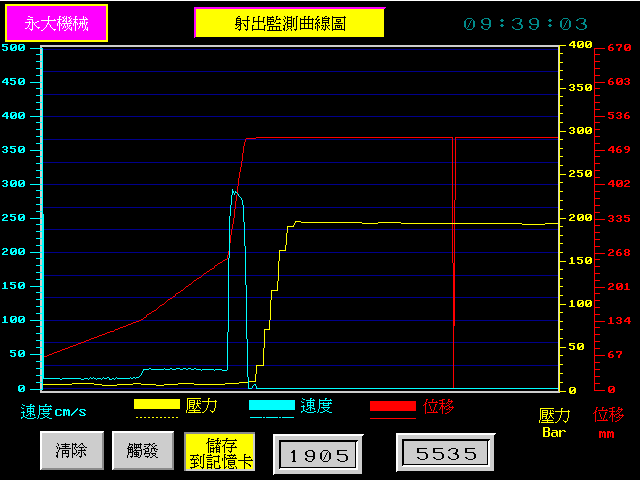
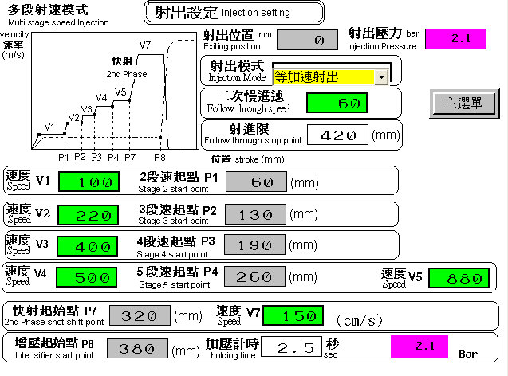
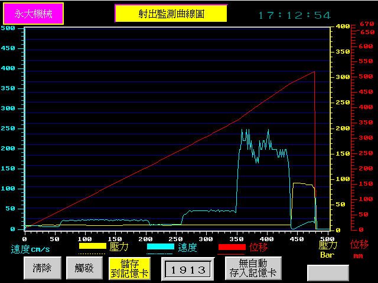
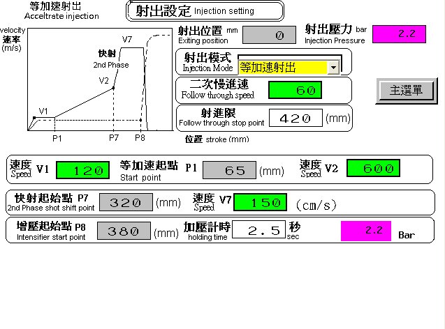
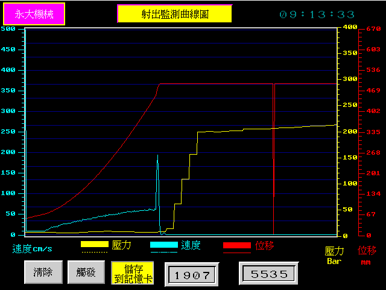
Full Test 實機模流分析

在冷室壓鑄製程中，料管屬於開放空間，熔湯流動過程中，可能捲入大量氣體而將空氣擠入模腔內，嚴重影響鑄件品質。有效選擇低速射出之臨界速度，使熔湯在料管內流動平順而無捲氣產生。
由於熔湯與料管壁的溫度差，熔湯倒入料管後，會在料管壁形成激冷層而呈固態，在推進的過程中形成捲氣、包氣的情形，經由模擬功能將訊息視覺化，進而調整溫度及射速，使熔湯達到快射點之前，呈成無捲氣飽管狀態。
可使用多段速功能，模擬熔湯進入模腔內流動情形，從中觀察，做出對應解決方案。